KYRILLOS WAHID
Computer & Systems Engineer specializing in declarative cloud platforms, GitOps automation, and high-reliability systems delivery across AWS, GCP, and Azure. Former SRE Intern at _VOIS[cite: 3].
Declarative systems, zero drift, and resilient lifecycles.
Graduated from Helwan University with a degree in Computer & Systems Engineering[cite: 3]. My engineering background centers on building immutable delivery pipelines, orchestrating rootless Kubernetes environments with Helm, and enforcing automated security baselines via static analysis and policy gates[cite: 3].
Key focus areas: Kubernetes Orchestration • Terraform IaC • CI/CD Pipelines • Linux Administration • Microservice Security Scanning.
- GCP Associate Cloud Engineer 2025-2028
- AWS Cloud Practitioner 2025-2028
- Azure Fundamentals (AZ-900) 2025
- Red Hat System Admin 1 RH124
Engineered a production-level CI/CD pipeline for a TypeScript microservice. Integrated linting, Jest/Supertest unit testing, Whitesource license audits, Docker builds, and Trivy CVE vulnerability scans. Post-merge triggers semantic releases and Helm-based Kubernetes rollouts[cite: 3].
Designed and deployed a full 3-tier Node.js/MongoDB application. Automated infrastructure provisioning using Terraform, managed configuration state via Ansible, and containerized deployment with Jenkins CI/CD on Kubernetes with live Slack alerts[cite: 3].
Led a 4-engineer team building a multimodal deepfake detector (audio, image, text). Designed modular Flask backend Blueprints, JWT cookie session authentication, and SQLAlchemy ORM. Awarded 3rd place internationally among 800+ projects[cite: 3].
Developed custom Bash automation to enforce organizational branch rules, permission templates, and secrets hygiene across dozens of repositories during enterprise-scale platform migration from GitLab to GitHub[cite: 3].
- Kubernetes (K8s)Cluster Ops
- HelmPackaging
- DockerMulti-stage
- AWS / GCP / AzureTri-Cloud
- TerraformProvisioning
- AnsibleConfig Mgmt
- GitHub ActionsCI Workflows
- JenkinsDeclarative
- Linux (RH124)Kernel Tuning
- Bash / PythonSec Automation
- Trivy / WhitesourceCVE Scanning
- Palo Alto / FortiGatePerimeter

